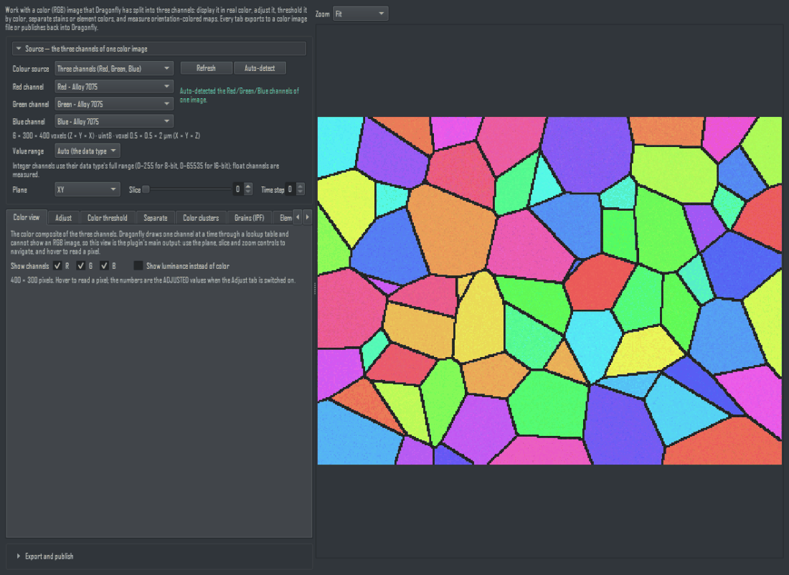
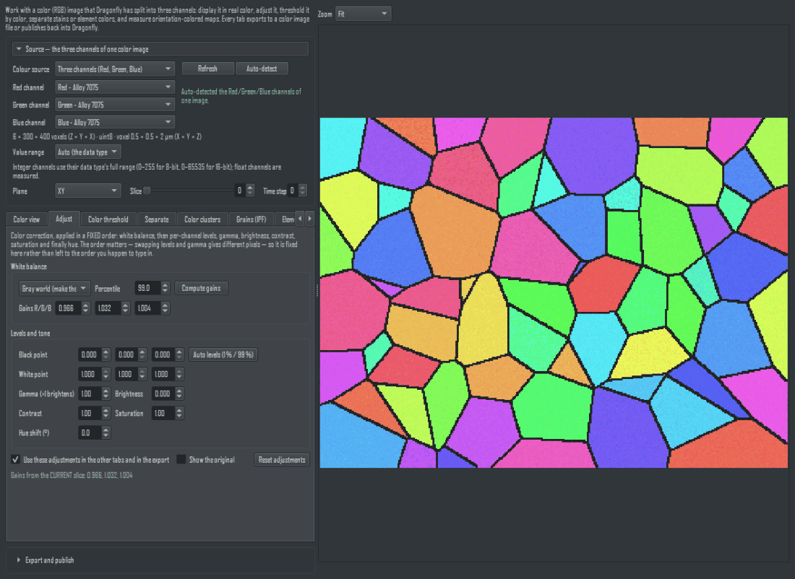
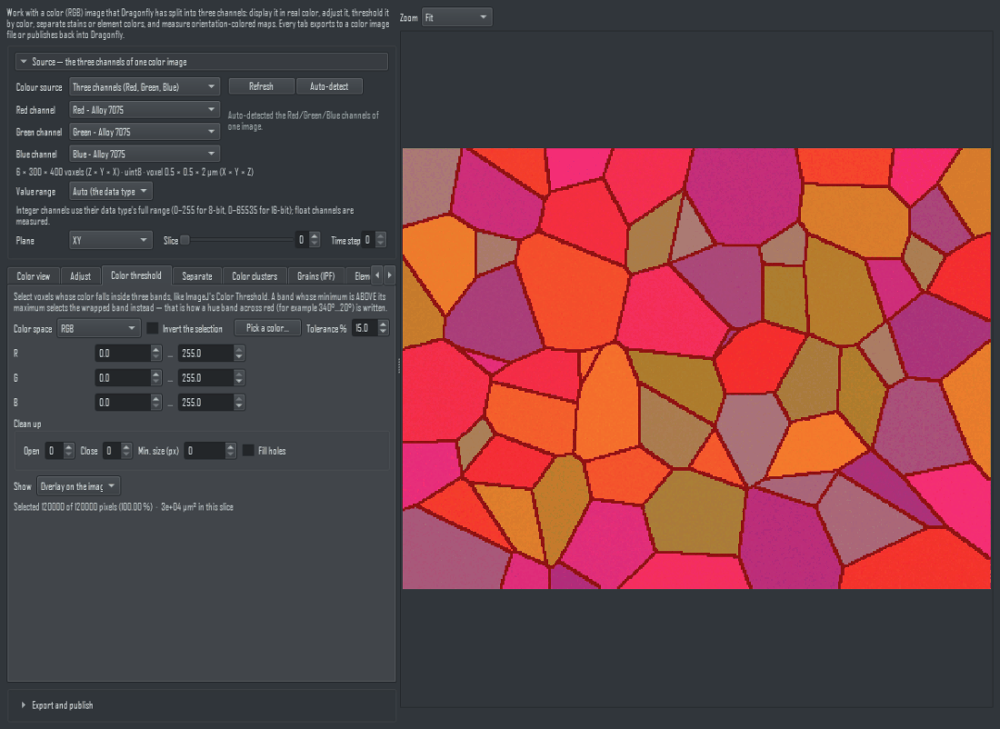
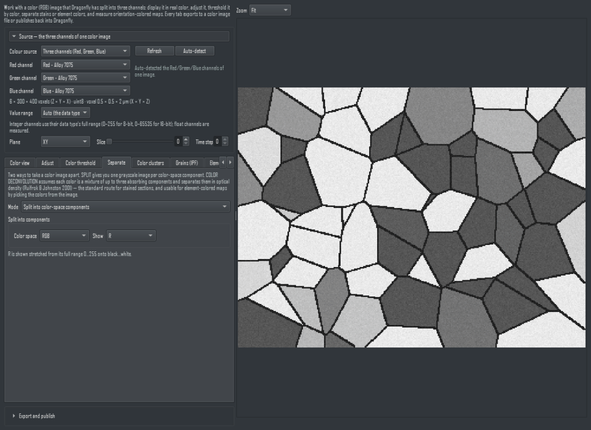
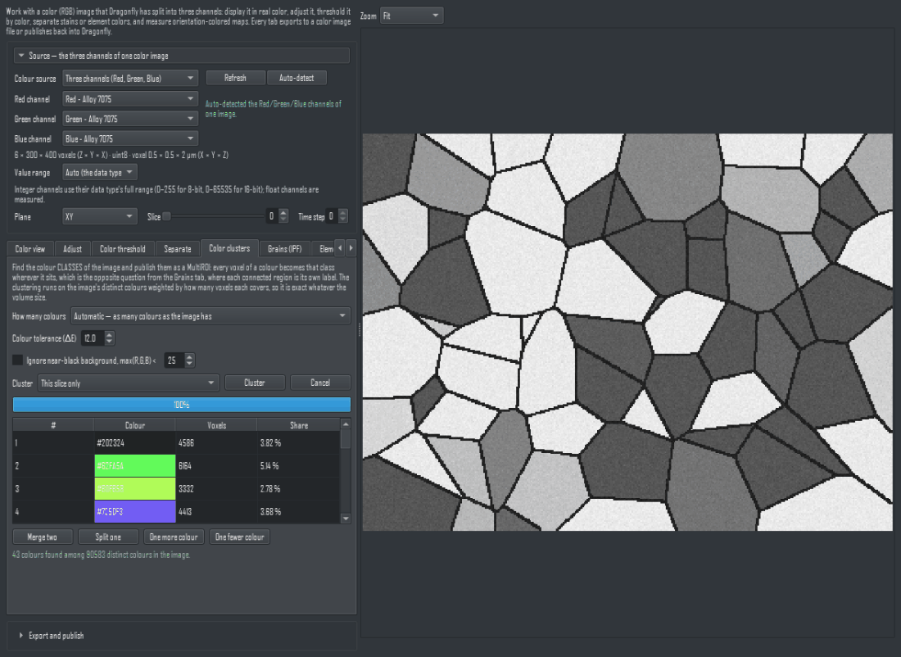
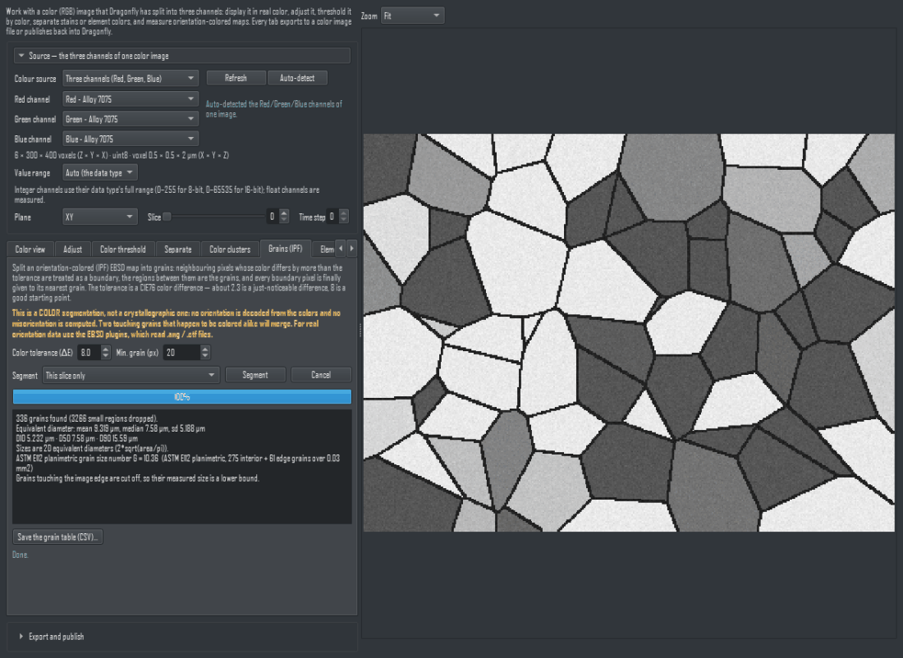
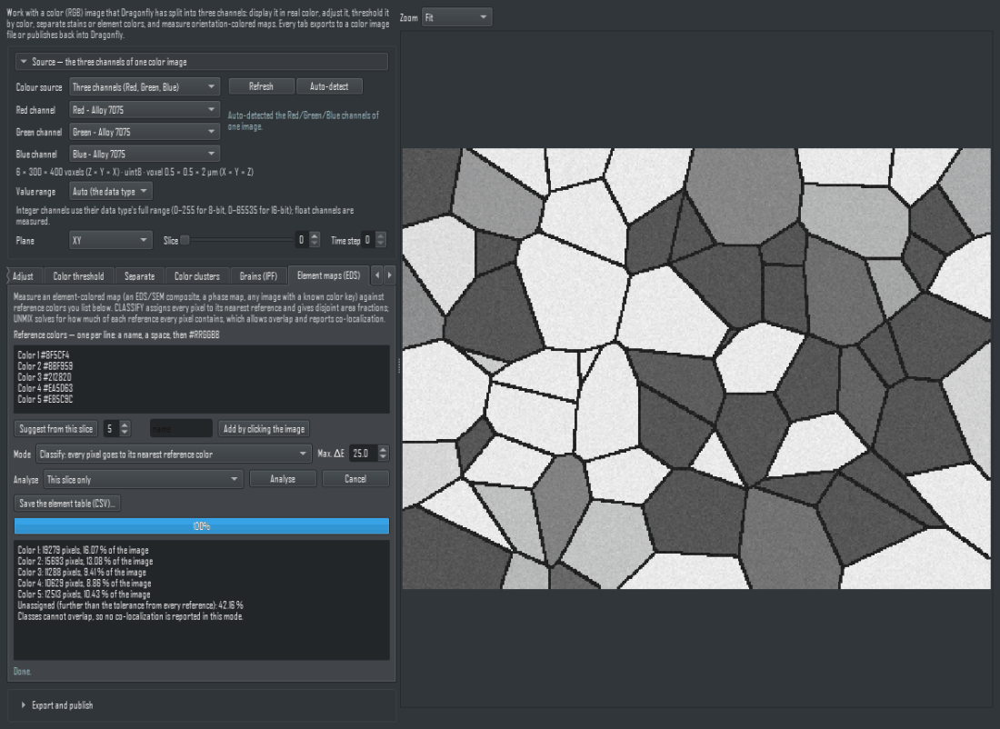

Color Image Processing - User Manual
Dragonfly Prototype Apps · Color Image Processing...
Version 1.0 · 2026-09-01
1. Introduction
Dragonfly renders one channel at a time through a lookup table and cannot display an RGB composite. A colour image imported into Dragonfly therefore arrives as three grayscale channels — Red - ..., Green - ..., Blue - ... — that can only be looked at separately. This plugin puts them back together and does the colour work on top of them.
The panel has one source selector at the top (the three channels, the value range, the viewing plane, the slice and the time step), six tabs that all read that same source, and one export/publish footer that serves every tab.
Nothing in the session is created or modified until you press Publish. Everything else reads the three channels and writes files where you point it.
It runs in Dragonfly's own process on the numpy, scipy and Pillow Dragonfly already ships: no install, no internet, no GPU, no virtual environment.
2. The source: three channels of one image
The first box is filled with the first image channel whose title starts with "Red". The second and third are then filled with the Green and Blue channels whose names match that same image, so with two colour images open in the session Green - Sample 2 is never paired with Red - Sample 1.
- When no matching name exists, the first Green / Blue channel is used instead and the panel says the three may belong to another image.
- A title that merely contains the letters (Reduction) is not a red channel: whole words are matched, at the start of the title first, then at the end.
- Refresh re-reads the session after you publish something new; Auto-detect runs the matching again.
Value range decides how channel values become colour. Auto uses the data type's full range (0–255 for 8-bit, 0–65535 for 16-bit); float channels have no natural range and are measured instead. Measured uses each channel's own minimum and maximum. Custom applies one range to all three.
Plane chooses XY, XZ or YZ; the slider walks the remaining axis, and every tab — and the export — follows it. Time step picks the frame of a 4-D channel.
⚠ The three channels must have the same size. Three channels of different sizes are refused with their sizes printed, rather than being stretched to match.
3. Tab 1 — Color view
The RGB composite, at last. Use the plane, slice and Zoom controls to navigate; hover over a pixel to read its position, RGB, HSV and CIE-Lab* values. The R / G / B tick boxes switch a channel off (useful for seeing which channel carries a feature), and one more shows the luminance instead of the colour.

The Color view tab. Dragonfly renders one channel at a time through a LUT and cannot draw an RGB composite at all — this tab is that composite.
When the Adjust tab is switched on, both the picture and the hover readout show the adjusted values, and the status line says so.
Exportable layers: the colour image, and its luminance as a grayscale image.
4. Tab 2 — Adjust
Colour correction, applied in a fixed order: white balance, then per-channel levels, gamma, brightness, contrast, saturation and finally hue. The order changes the result — swapping levels and gamma gives different pixels — so it is pinned here rather than left to the order you happen to type in.

The Adjust tab after one click of white balance. Every adjustment is a display transform until you export or publish it.
- White balance: Gray world makes the three channel means equal; White patch equalises a bright percentile (99 % by default, so one hot pixel cannot set the white point); From a picked neutral pixel waits for you to click a pixel that should be neutral gray. All three fill the same three gain boxes, which you can then edit.
- Levels: a black and a white point per channel. Auto levels sets them to the 1 % and 99 % points of the slice you are looking at.
- Gamma above 1 brightens. Saturation 0 leaves a neutral gray, 1 is unchanged. Hue shift rotates the colour wheel in degrees.
Use these adjustments in the other tabs and in the export (on by default) is what makes this tab feed the whole panel. Untick it to experiment without changing what the other tabs measure. Show the original flips the preview back to the untouched image.
⚠ White balance and auto levels are computed from the slice you are LOOKING AT, not from the whole volume. On a stack whose brightness drifts, check the result at both ends.
5. Tab 3 — Color threshold
Select voxels whose colour falls inside three bands, exactly like ImageJ's Color Threshold. The colour space is RGB, HSV, CIE-Lab* or YCbCr, and each band is shown in that space's own units — hue in degrees, saturation and value in percent, L* 0–100, a/b about ±128, RGB and YCbCr 0–255.

The Color threshold tab. The selection is defined in a colour space you choose, and the mask can be published as an ROI or the connected pieces as a MultiROI.
A band whose minimum is above its maximum selects the wrapped band. That is how a hue band across red — 340°…20° — is written; there is no separate invert box per band to get wrong. One Invert the selection box inverts the whole result.
Pick a colour… then clicking the image sets all three bands around that colour, as a percentage of each component's full range (the Tolerance % box).
Clean up applies, in order: opening (removes specks), closing (bridges pinholes), a minimum connected size in pixels, and hole filling. The status line gives the selected pixel count, the percentage, and the area in µm² when the pixel size is known.
Exportable layers, MultiROI first: the selection as a MultiROI (one label), the connected pieces as a MultiROI (one label each, numbered across the whole stack rather than restarted on every slice — more than 65535 pieces is refused rather than silently merged), the selection as an ROI, the image inside the selection, and the tinted overlay (export only).
6. Tab 4 — Separate
Two ways to take a colour image apart.

The Separate tab: split into components, or unmix stains. Negative amounts are reported rather than hidden — that fraction is how you learn the stain vectors are wrong.
Split into colour-space components
One grayscale image per component of the chosen space — hue, saturation, value; L, a, b*; and so on. Each is stretched from its own full range onto black…white, and the range used is printed.
Colour deconvolution
Assumes each colour is a mixture of up to three absorbing components and separates them in optical density (Ruifrok & Johnston, 2001) — the standard route for stained sections. Eight presets are provided (H&E, H&E 2, H DAB, H AEC, Feulgen Light Green, Giemsa, Masson Trichrome, Alcian Blue & H) plus RGB and CMY, and every vector can be edited or set by clicking a pixel that shows one component alone. An all-zero third vector is replaced by the residual that the first two do not explain.
⚠ Negative amounts are reported, not hidden. A systematically negative component means the vectors do not describe this image, and clipping it would turn a wrong preset into a clean-looking picture. The panel prints the mean, the maximum and the percentage of negative pixels for each component, and warns above 25 %. The displayed image is 10^(−amount), so dark means "much of this component", as ImageJ shows it.
7. Tab 5 — Color clusters
Finds the colour classes of the image and publishes them as a MultiROI. A class is every voxel of that colour, wherever it sits — which is the opposite question from the Grains tab: two separate regions of one colour are one class here and two grains there. Both tabs exist because both questions are asked.

The Color clusters tab. A class is every voxel of that colour ANYWHERE in the image, which is a different question from the grain tab beside it.
This tab replaces the retired Color Image to MultiROI plugin, whose engine it is.
- Automatic decides how many colours the image has: colours within the ΔE tolerance of one already kept join it instead of starting their own, with the most common colours seeding the classes. Smaller tolerance, more classes.
- A fixed number (k) runs weighted k-means++ for exactly k classes. The seed is fixed, so the same image and the same k give the same answer twice.
- Ignore near-black background puts everything below max(R,G,B) < into label 0, which keeps a black surround out of the classes.
The clustering runs on the image's distinct colours weighted by voxel count, not on the voxels, so it is exact and quick however large the volume is.
The table then lets you correct it: select two rows and Merge two, one row and Split one, or use One more colour / One fewer colour to split the most spread-out class or merge the closest pair. Every edit re-assigns and re-refines, and the preview follows.
Exportable layers: the colour classes as a MultiROI (first, so Publish defaults to it — each label carries its own colour and a name), each class in its own colour (export only), and the image itself.
8. Tab 6 — Grains (IPF)
⚠ This is a colour segmentation, not a crystallographic one. No orientation is decoded from the colours and no misorientation is computed. Two touching grains that happen to be coloured alike will merge. For real orientation data use the EBSD plugins, which read .ang / .ctf files.

The Grains (IPF) tab. It is a COLOUR segmentation: it decodes no orientation and computes no misorientation, and the banner says so.
Neighbouring pixels whose colour differs by more than the tolerance (a CIE76 difference: about 2.3 is a just-noticeable difference, 8 is a good starting point) are treated as a boundary; the regions between them are the grains; regions smaller than Min. grain are dropped; and every boundary pixel is finally given to its nearest grain, so the boundary does not eat the grains.
Segment this slice only or all slices in 3-D. The results box gives the grain count, the mean / median / standard deviation of the equivalent diameter, and D10 / D50 / D90. A single slice gets a 2-D equivalent circle diameter, 2·sqrt(area/π); a real volume gets the sphere-equivalent (6·volume/π)^(1/3). The two are not comparable, so which one was used is always stated.
For a 2-D map with a known pixel size the ASTM E112 planimetric grain size number G is also given, counting grains that touch the image edge at half weight — the standard's own convention — with the counts and the measured area printed beside it.
Grains touching the image edge are cut off, so their measured size is a lower bound. This is stated in the results box every time.
Save the grain table (CSV) writes one row per grain: voxels, size, equivalent diameter and mean colour. Exportable layers: the grains in their mean colour, the grain labels (published as a MultiROI, each label coloured by that grain's own mean colour), the boundaries (an ROI), and the image with the boundaries drawn.
9. Tab 7 — Element maps (EDS)
Measures an element-coloured composite — an EDS/SEM map, a phase map, any image with a known colour key — against reference colours you list, one per line, as a name, a space and #RRGGBB. Suggest from this slice proposes the most common well-separated colours in the image (each one the mean of the voxels it stands for, so it never invents a colour that is not there); Add by clicking the image adds the colour under the cursor.

The Element maps (EDS) tab. More than three references on an RGB image is refused rather than guessed at.
- Classify puts every pixel in its nearest reference colour, measured as a CIE76 difference. A pixel further away than Max. ΔE from every reference is left unassigned and counted. The classes are disjoint, so this mode reports area fractions and says explicitly that no co-localization applies.
- Unmix solves, per pixel, how much of each reference it contains, by least squares. An RGB pixel carries three numbers, so more than three references is refused rather than guessed. Masks are then the pixels above the Mask threshold, they may overlap, and co-localization is reported for every pair: the intersection, the Jaccard index, and BOTH conditional fractions.
⚠ Unmixing is ordinary least squares with negative abundances clipped to zero for display — not non-negative least squares. The percentage of pixels where something had to be clipped is reported: a large value means the reference colours do not describe this image.
Save the element table (CSV) writes the name, reference colour, pixel count and fraction of every element. Exportable layers: the element labels (a MultiROI coloured by the reference colours), the classified image, one mask per element, and — in unmix mode — one abundance image per element.
10. Export and publish
One footer serves all six tabs. What to export lists whatever the tab you are on can produce; Slices is the current slice, a range, or all of them.
1. Pick the layer in What to export.
2. Choose the slices, the output folder and a file-name prefix.
3. Choose the format: PNG or TIFF (lossless), BMP (uncompressed) or JPEG (lossy — the panel says so). TIFF can also be written as one multi-page file.
4. Export image file(s)… writes one numbered file per slice — the digit width is yours to choose — with the pixel size written into the file where the format has a place for it.
5. Or Publish to Dragonfly to put the result back into the session.
What publishing produces depends on the layer: a colour result becomes three channels named Red - <name>, Green - <name> and Blue - <name>; a grayscale result one channel; a mask an ROI; labels a MultiROI carrying each label's colour. All of them inherit the source's voxel size, orientation and origin.
⚠ Publishing needs "All slices". The new object inherits the source's position in space, so publishing only part of the stack would draw the result in the wrong place. A sub-range is refused with that reason; export it to files instead.
⚠ A segmentation publishes as a MultiROI, not as a colour image. Every tab that segments — Color threshold, Grains (IPF), Element maps — lists its MultiROI layer FIRST, so Publish defaults to it, and each label carries its own colour and its own NAME. The coloured renderings of a segmentation (grains in their mean colour, elements in their reference colours, the tinted selection, the image with boundaries drawn) can be exported as image files but deliberately cannot be published: publishing one would add three RGB channels of colour this plugin painted on, instead of the segmentation itself. The panel says so and points at the MultiROI layer.
11. What this plugin does not do
- It does not decode a crystal orientation from an IPF colour, and it computes no misorientation.
- It does not report an area or an ASTM grain size when the pixel size cannot be read — it says the pixel size is unknown instead of printing a guess.
- It does not do non-negative least squares, and it does not hide the negative values that ordinary least squares and colour deconvolution produce; those numbers are how you tell that the reference colours or stain vectors are wrong.
- It assumes sRGB for the CIE-Lab* conversion (D65 white point). An image that is not sRGB still converts; it is simply not colorimetric.
- Colour differences are CIE76 — a plain distance in Lab*, symmetric and with no hidden parameters, but not perceptually uniform for saturated colours.